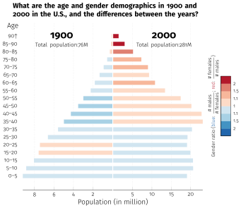

Yun-Sheng Chang (yschang@mit.edu)
Question: What are the age and gender demographics in 1900 and 2000 in the U.S., and the differences between the years?
Figure 1. A line chart depicting the male and female population by age in 1900 and 2000, respectively.
Figure 2. A bar chart showing the population (in bar length) and the gender ratio (in bar color) of each age group in 1900 and 2000, respectively. The density of the strokes in the color map represents the color saturation.
Figure 3. A pie chart showing the population (in slice area) and the gender ratio (in slice color) in 1900 and 2000, respectively. The density of the strokes in the color map represents the color saturation.
One thing I’ve learned while making and assessing the sketches is how the clarity of the messages we wish to convey depends heavily on the design choices we make. For instance, if we’re trying to show the difference between populations in 1900 and 2000, then a common scale for population as used in Sketch 1 would be preferred; however, if we’re trying to show the overall population distribution within 1900 and 2000 respectively, then a separate scale as used in Sketch 2 would do a better job. For another example, if the precise gender difference within an age group is the goal, then Sketch 1 might be the best option, as viewers can measure the line distance between a pair of blue and red dots; if we want viewers to quickly observe the overall age distribution and gender ratio, then Sketch 2 seems to be the best fit; if the ability to compute population in a wider range of age is what we aim for, then Sketch 3 should facilitate that with the ability to combine the pie slices. Another thing I’ve learned is different kinds of information can interfere with each other. For instance, in Sketches 2 and 3, we’ve seen that gender ratio becomes unclear in age groups with low population (e.g., 90-up in 1900). In this case, population decides how much length or area in which gender ratio can be expressed.

Figure 4. A bar chart showing the population (in bar length) and the gender ratio (in bar color) of each age group in 1900 and 2000, respectively.
The goal of this visualization is to reveal the overall age and gender demographics in 1900 and 2000 respectively, as well as the contrast between the two years. Eventually I based my final design on Sketch 2 for it turns out to disclose some interesting facts/trends more directly. Concretely, the use of a divergent color scheme makes the imbalance of gender ratio among younger and older age groups in 2000 immediately obvious; the fact that the bars in 1900 shorten more rapidly than in 2000 suggests the demographic structures are quite different in the two years; the abrupt increase for the 35-50 age groups hints at some important events (Baby Boom in this case) happened in the past.
The final design generally follows Sketch 2 in phase 1, so here I’ll simply elaborate on the details and differences. Overall, I followed the general style as in the mtheme Beamer theme. I chose Paul Tol’s color scheme, since it seems most aesthetically pleasing to me. However, the default color map seems a bit ambiguous especially for the middle two colors, so I tune the color intensity a bit to try to make them more distinct. The resulting color map has improved, but still not satisfactory. Another design choice is whether the bars should have outlines? I think no, as the outlines are not particularly helpful except in distinguishing bars in the same age group for 1900 and 2000; however, a tiny gap between the two axes would do the work as well. As for the text description of the color map, I actually like the one in Sketch 2 more, but I haven’t found a way to draw it nicely with TikZ/pgfplots, the software used to draw the final design. Finally, I added dim grid lines to make the comparison easier to be made.
I think creating and evaluating the sketches has indeed helped me with the final design. Sketching allows for the visual comparison of different design choices in a timely manner. By assessing them, I’m able to clarify the trade offs of each design choice, and the messages I actually want to convey to the viewers. Sketching also helps in strengthening or falsifying my design assumptions (i.e., it looks good in my imagination, but how about it on paper?).